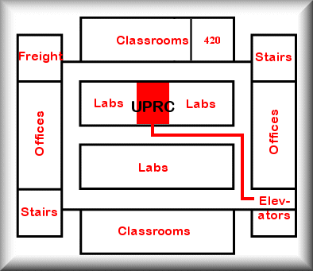

Directions to our lab:
From Fifth Avenue, walk up Thackeray Street to the corner of Thackeray and O'Hara.
Benedum is the tall building at the top of the steps on the left.
Take elevators to 4th floor.
Turn right at first hallway.
Turn left into the middle hallway.
Our lab is approximately halfway down.

Last updated: